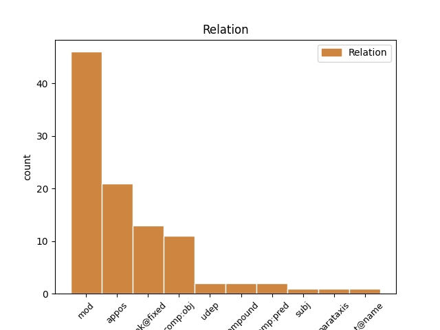
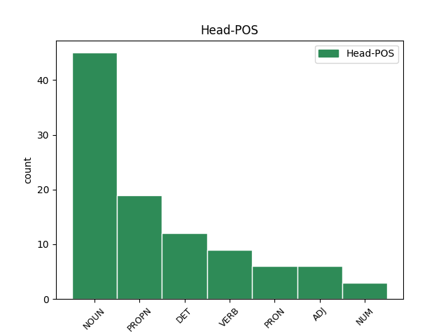
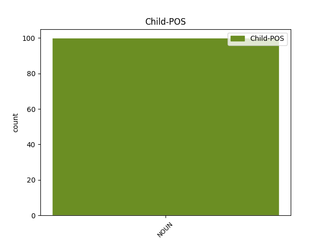

Distribution of features within this leaf



Agreement Rules sorted by frequency.
- When the dependent token is the modifer(mod) of the head token, and the dependent token is ADJ.
1 Segundo _ _ _ _ 0 _ _ _
2 Cagiao _ _ _ _ 0 _ _ _
3 , _ _ _ _ 0 _ _ _
4 isto _ _ _ _ 0 _ _ _
5 foi _ _ _ _ 0 _ _ _
6 o _ _ _ _ 0 _ _ _
7 que _ _ _ _ 0 _ _ _
8 dificultou _ _ _ _ 0 _ _ _
9 os _ _ _ _ 0 _ _ _
10 que _ _ _ _ 0 _ _ _
11 ían _ _ _ _ 0 _ _ _
12 ser _ _ _ _ 0 _ _ _
13 derradeiros _ _ _ _ 0 _ _ _
14 pasos _ _ _ _ 0 _ _ _
15 de _ _ _ _ 0 _ _ _
16 a _ _ _ _ 0 _ _ _
17 regulación regulación NOUN Scfs Gender=Fem|Number=Sing 0 _ _ _
18 laboral laboral ADJ A0fs Gender=Fem|Number=Sing 17 mod _ _
19 de _ _ _ _ 0 _ _ _
20 as _ _ _ _ 0 _ _ _
21 antigas _ _ _ _ 0 _ _ _
22 Astano _ _ _ _ 0 _ _ _
23 e _ _ _ _ 0 _ _ _
24 Bazán _ _ _ _ 0 _ _ _
25 , _ _ _ _ 0 _ _ _
26 denominada _ _ _ _ 0 _ _ _
27 Navantia _ _ _ _ 0 _ _ _
28 dende _ _ _ _ 0 _ _ _
29 esta _ _ _ _ 0 _ _ _
30 semana _ _ _ _ 0 _ _ _
31 . _ _ _ _ 0 _ _ _
1 De _ _ _ _ 0 _ _ _
2 non _ _ _ _ 0 _ _ _
3 parar _ _ _ _ 0 _ _ _
4 a _ _ _ _ 0 _ _ _
5 sangría _ _ _ _ 0 _ _ _
6 económica económico ADJ A0fs Gender=Fem|Number=Sing 0 _ _ _
7 e _ _ _ _ 0 _ _ _
8 social social ADJ A0fs Gender=Fem|Number=Sing 6 conj _ _
9 de _ _ _ _ 0 _ _ _
10 Ferrol _ _ _ _ 0 _ _ _
11 , _ _ _ _ 0 _ _ _
12 o _ _ _ _ 0 _ _ _
13 seu _ _ _ _ 0 _ _ _
14 futuro _ _ _ _ 0 _ _ _
15 é _ _ _ _ 0 _ _ _
16 moi _ _ _ _ 0 _ _ _
17 negro _ _ _ _ 0 _ _ _
18 e _ _ _ _ 0 _ _ _
19 esta _ _ _ _ 0 _ _ _
20 preocupación _ _ _ _ 0 _ _ _
21 está _ _ _ _ 0 _ _ _
22 patente _ _ _ _ 0 _ _ _
23 xa _ _ _ _ 0 _ _ _
24 en _ _ _ _ 0 _ _ _
25 os _ _ _ _ 0 _ _ _
26 habitantes _ _ _ _ 0 _ _ _
27 de _ _ _ _ 0 _ _ _
28 a _ _ _ _ 0 _ _ _
29 cidade _ _ _ _ 0 _ _ _
30 , _ _ _ _ 0 _ _ _
31 agora _ _ _ _ 0 _ _ _
32 mesmo _ _ _ _ 0 _ _ _
33 máis _ _ _ _ 0 _ _ _
34 desmoralizados _ _ _ _ 0 _ _ _
35 que _ _ _ _ 0 _ _ _
36 nunca _ _ _ _ 0 _ _ _
37 . _ _ _ _ 0 _ _ _
1 O _ _ _ _ 0 _ _ _
2 máis _ _ _ _ 0 _ _ _
3 salientábel _ _ _ _ 0 _ _ _
4 de _ _ _ _ 0 _ _ _
5 estas _ _ _ _ 0 _ _ _
6 intervencións _ _ _ _ 0 _ _ _
7 foi _ _ _ _ 0 _ _ _
8 o _ _ _ _ 0 _ _ _
9 unánime _ _ _ _ 0 _ _ _
10 recoñecemento _ _ _ _ 0 _ _ _
11 por _ _ _ _ 0 _ _ _
12 parte _ _ _ _ 0 _ _ _
13 de _ _ _ _ 0 _ _ _
14 todos _ _ _ _ 0 _ _ _
15 os _ _ _ _ 0 _ _ _
16 patróns patróns NOUN Scmp Gender=Masc|Number=Plur 0 _ _ _
17 maiores maior ADJ Acmp Degree=Cmp|Gender=Masc|Number=Plur 16 compound _ _
18 de _ _ _ _ 0 _ _ _
19 a _ _ _ _ 0 _ _ _
20 falla _ _ _ _ 0 _ _ _
21 de _ _ _ _ 0 _ _ _
22 medios _ _ _ _ 0 _ _ _
23 de _ _ _ _ 0 _ _ _
24 prevención _ _ _ _ 0 _ _ _
25 e _ _ _ _ 0 _ _ _
26 loita _ _ _ _ 0 _ _ _
27 contra _ _ _ _ 0 _ _ _
28 a _ _ _ _ 0 _ _ _
29 contaminación _ _ _ _ 0 _ _ _
30 mariña _ _ _ _ 0 _ _ _
31 , _ _ _ _ 0 _ _ _
32 e _ _ _ _ 0 _ _ _
33 a _ _ _ _ 0 _ _ _
34 certeza _ _ _ _ 0 _ _ _
35 de _ _ _ _ 0 _ _ _
36 que _ _ _ _ 0 _ _ _
37 estamos _ _ _ _ 0 _ _ _
38 xa _ _ _ _ 0 _ _ _
39 de _ _ _ _ 0 _ _ _
40 novo _ _ _ _ 0 _ _ _
41 en _ _ _ _ 0 _ _ _
42 a _ _ _ _ 0 _ _ _
43 conta _ _ _ _ 0 _ _ _
44 atrás _ _ _ _ 0 _ _ _
45 cara _ _ _ _ 0 _ _ _
46 a _ _ _ _ 0 _ _ _
47 outro _ _ _ _ 0 _ _ _
48 Prestige _ _ _ _ 0 _ _ _
49 . _ _ _ _ 0 _ _ _
1 O _ _ _ _ 0 _ _ _
2 fundimento _ _ _ _ 0 _ _ _
3 ten _ _ _ _ 0 _ _ _
4 a _ _ _ _ 0 _ _ _
5 virtude _ _ _ _ 0 _ _ _
6 de _ _ _ _ 0 _ _ _
7 presentar _ _ _ _ 0 _ _ _
8 un _ _ _ _ 0 _ _ _
9 Hitler Hitler PROPN Spms Gender=Masc|Number=Sing 0 _ _ _
10 críbel críbel ADJ A0ms Gender=Masc|Number=Sing 9 comp:pred _ SpaceAfter=No
11 , _ _ _ _ 0 _ _ _
12 humano _ _ _ _ 0 _ _ _
13 , _ _ _ _ 0 _ _ _
14 como _ _ _ _ 0 _ _ _
15 non _ _ _ _ 0 _ _ _
16 podía _ _ _ _ 0 _ _ _
17 ser _ _ _ _ 0 _ _ _
18 menos _ _ _ _ 0 _ _ _
19 , _ _ _ _ 0 _ _ _
20 familiar _ _ _ _ 0 _ _ _
21 dentro _ _ _ _ 0 _ _ _
22 de _ _ _ _ 0 _ _ _
23 o _ _ _ _ 0 _ _ _
24 que _ _ _ _ 0 _ _ _
25 daba _ _ _ _ 0 _ _ _
26 de _ _ _ _ 0 _ _ _
27 si _ _ _ _ 0 _ _ _
28 a _ _ _ _ 0 _ _ _
29 situación _ _ _ _ 0 _ _ _
30 de _ _ _ _ 0 _ _ _
31 emerxencia _ _ _ _ 0 _ _ _
32 , _ _ _ _ 0 _ _ _
33 o _ _ _ _ 0 _ _ _
34 que _ _ _ _ 0 _ _ _
35 nos _ _ _ _ 0 _ _ _
36 permite _ _ _ _ 0 _ _ _
37 analizar _ _ _ _ 0 _ _ _
38 mellor _ _ _ _ 0 _ _ _
39 as _ _ _ _ 0 _ _ _
40 razóns _ _ _ _ 0 _ _ _
41 de _ _ _ _ 0 _ _ _
42 ser _ _ _ _ 0 _ _ _
43 de _ _ _ _ 0 _ _ _
44 o _ _ _ _ 0 _ _ _
45 fenómeno _ _ _ _ 0 _ _ _
46 nazi _ _ _ _ 0 _ _ _
47 . _ _ _ _ 0 _ _ _
1 Estas _ _ _ _ 0 _ _ _
2 cousas cousa NOUN Scfp Gender=Fem|Number=Plur 0 _ _ _
3 , _ _ _ _ 0 _ _ _
4 propias propio ADJ A0fp Gender=Fem|Number=Plur 2 appos _ _
5 de _ _ _ _ 0 _ _ _
6 un _ _ _ _ 0 _ _ _
7 babeca _ _ _ _ 0 _ _ _
8 , _ _ _ _ 0 _ _ _
9 saen _ _ _ _ 0 _ _ _
10 de _ _ _ _ 0 _ _ _
11 a _ _ _ _ 0 _ _ _
12 cabaza _ _ _ _ 0 _ _ _
13 , _ _ _ _ 0 _ _ _
14 non _ _ _ _ 0 _ _ _
15 de _ _ _ _ 0 _ _ _
16 a _ _ _ _ 0 _ _ _
17 cabeza _ _ _ _ 0 _ _ _
18 , _ _ _ _ 0 _ _ _
19 de _ _ _ _ 0 _ _ _
20 alguén _ _ _ _ 0 _ _ _
21 que _ _ _ _ 0 _ _ _
22 pasou _ _ _ _ 0 _ _ _
23 por _ _ _ _ 0 _ _ _
24 la _ _ _ _ 0 _ _ _
25 universidade _ _ _ _ 0 _ _ _
26 e _ _ _ _ 0 _ _ _
27 que _ _ _ _ 0 _ _ _
28 para _ _ _ _ 0 _ _ _
29 máis _ _ _ _ 0 _ _ _
30 inri _ _ _ _ 0 _ _ _
31 é _ _ _ _ 0 _ _ _
32 profesor _ _ _ _ 0 _ _ _
33 de _ _ _ _ 0 _ _ _
34 arte _ _ _ _ 0 _ _ _
35 . _ _ _ _ 0 _ _ _
1 O _ _ _ _ 0 _ _ _
2 que _ _ _ _ 0 _ _ _
3 produce _ _ _ _ 0 _ _ _
4 pavor _ _ _ _ 0 _ _ _
5 é _ _ _ _ 0 _ _ _
6 pensar _ _ _ _ 0 _ _ _
7 en _ _ _ _ 0 _ _ _
8 o _ _ _ _ 0 _ _ _
9 que _ _ _ _ 0 _ _ _
10 ten _ _ _ _ 0 _ _ _
11 recuado _ _ _ _ 0 _ _ _
12 o _ _ _ _ 0 _ _ _
13 nivel _ _ _ _ 0 _ _ _
14 cultural _ _ _ _ 0 _ _ _
15 en _ _ _ _ 0 _ _ _
16 este _ _ _ _ 0 _ _ _
17 país _ _ _ _ 0 _ _ _
18 , _ _ _ _ 0 _ _ _
19 incluído incluír VERB V0p0ms Gender=Masc|Number=Sing|VerbForm=Part 0 _ _ _
20 o _ _ _ _ 0 _ _ _
21 universitario universitario ADJ A0ms Gender=Masc|Number=Sing 19 udep _ SpaceAfter=No
22 . _ _ _ _ 0 _ _ _
Disagree Examples:
1 Porque _ _ _ _ 0 _ _ _
2 dá _ _ _ _ 0 _ _ _
3 a _ _ _ _ 0 _ _ _
4 impresión _ _ _ _ 0 _ _ _
5 de _ _ _ _ 0 _ _ _
6 que _ _ _ _ 0 _ _ _
7 o _ _ _ _ 0 _ _ _
8 bo _ _ _ _ 0 _ _ _
9 de _ _ _ _ 0 _ _ _
10 o _ _ _ _ 0 _ _ _
11 profesor _ _ _ _ 0 _ _ _
12 vive _ _ _ _ 0 _ _ _
13 en _ _ _ _ 0 _ _ _
14 unha _ _ _ _ 0 _ _ _
15 nube nube NOUN Scfs Gender=Fem|Number=Sing 0 _ _ _
16 alleo alleo ADJ A0ms Gender=Masc|Number=Sing 15 mod _ _
17 a _ _ _ _ 0 _ _ _
18 o _ _ _ _ 0 _ _ _
19 mundo _ _ _ _ 0 _ _ _
20 de _ _ _ _ 0 _ _ _
21 a _ _ _ _ 0 _ _ _
22 intelixencia _ _ _ _ 0 _ _ _
23 media _ _ _ _ 0 _ _ _
24 e _ _ _ _ 0 _ _ _
25 de _ _ _ _ 0 _ _ _
26 a _ _ _ _ 0 _ _ _
27 cultura _ _ _ _ 0 _ _ _
28 máis _ _ _ _ 0 _ _ _
29 elemental _ _ _ _ 0 _ _ _
30 . _ _ _ _ 0 _ _ _
1 Instaura _ _ _ _ 0 _ _ _
2 se _ _ _ _ 0 _ _ _
3 así _ _ _ _ 0 _ _ _
4 unha _ _ _ _ 0 _ _ _
5 tricefalia tricefalia NOUN Scfs Gender=Fem|Number=Sing 0 _ _ _
6 en _ _ _ _ 0 _ _ _
7 o _ _ _ _ 0 _ _ _
8 poder _ _ _ _ 0 _ _ _
9 local _ _ _ _ 0 _ _ _
10 socialista _ _ _ _ 0 _ _ _
11 moi _ _ _ _ 0 _ _ _
12 difícil difícil ADJ A0ms Gender=Masc|Number=Sing 5 mod _ _
13 de _ _ _ _ 0 _ _ _
14 xestionar _ _ _ _ 0 _ _ _
15 para _ _ _ _ 0 _ _ _
16 a _ _ _ _ 0 _ _ _
17 dirección _ _ _ _ 0 _ _ _
18 tanto _ _ _ _ 0 _ _ _
19 galega _ _ _ _ 0 _ _ _
20 como _ _ _ _ 0 _ _ _
21 federal _ _ _ _ 0 _ _ _
22 . _ _ _ _ 0 _ _ _
1 Galiza _ _ _ _ 0 _ _ _
2 terá _ _ _ _ 0 _ _ _
3 voz voz NOUN Scfs Gender=Fem|Number=Sing 0 _ _ _
4 e _ _ _ _ 0 _ _ _
5 voto _ _ _ _ 0 _ _ _
6 directos directo ADJ A0mp Gender=Masc|Number=Plur 3 mod _ _
7 en _ _ _ _ 0 _ _ _
8 o _ _ _ _ 0 _ _ _
9 Comité _ _ _ _ 0 _ _ _
10 de _ _ _ _ 0 _ _ _
11 Rexións _ _ _ _ 0 _ _ _
12 e _ _ _ _ 0 _ _ _
13 en _ _ _ _ 0 _ _ _
14 calquera _ _ _ _ 0 _ _ _
15 outra _ _ _ _ 0 _ _ _
16 institución _ _ _ _ 0 _ _ _
17 ou _ _ _ _ 0 _ _ _
18 órgano _ _ _ _ 0 _ _ _
19 de _ _ _ _ 0 _ _ _
20 representación _ _ _ _ 0 _ _ _
21 territorial _ _ _ _ 0 _ _ _
22 de _ _ _ _ 0 _ _ _
23 a _ _ _ _ 0 _ _ _
24 Unión _ _ _ _ 0 _ _ _
25 . _ _ _ _ 0 _ _ _
1 Reproducimos _ _ _ _ 0 _ _ _
2 a _ _ _ _ 0 _ _ _
3 intervención _ _ _ _ 0 _ _ _
4 de _ _ _ _ 0 _ _ _
5 o _ _ _ _ 0 _ _ _
6 patrón patrón NOUN Scms Gender=Masc|Number=Sing 0 _ _ _
7 maior maior ADJ Acfs Degree=Cmp|Gender=Fem|Number=Sing 6 compound _ _
8 de _ _ _ _ 0 _ _ _
9 o _ _ _ _ 0 _ _ _
10 Grove _ _ _ _ 0 _ _ _
11 . _ _ _ _ 0 _ _ _
1 sermos _ _ _ _ 0 _ _ _
2 bípedes bípede ADJ A0ap Gender=Com|Number=Plur 0 _ _ _
3 ou _ _ _ _ 0 _ _ _
4 dípodos dípodo ADJ A0mp Gender=Masc|Number=Plur 2 conj _ SpaceAfter=No
5 , _ _ _ _ 0 _ _ _
6 e _ _ _ _ 0 _ _ _
7 irmos _ _ _ _ 0 _ _ _
8 a _ _ _ _ 0 _ _ _
9 o _ _ _ _ 0 _ _ _
10 pedicuro _ _ _ _ 0 _ _ _
11 ou _ _ _ _ 0 _ _ _
12 a _ _ _ _ 0 _ _ _
13 o _ _ _ _ 0 _ _ _
14 podólogo _ _ _ _ 0 _ _ _
15 . _ _ _ _ 0 _ _ _